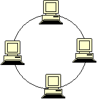

Кольцевая топология
После изучения шинной топологии у нас остался один вопрос: как передать информацию в обратном направлении, не усложняя схему? Ответ на этот вопрос прост - необходимо замкнуть нашу линию и тогда пакеты смогут по кольцу пройти путь от любого компьютера к любому. Система не слишком усложниться, но удобство её возрастет. Наша схема будет выглядеть так:

А теперь попробуйте построить такую схему.

К сожалению, у нас все равно остается проблема повреждения провода, которая может вывести всю систему из строя.
Вы знаете про кольцевую ветку метро в Москве? Представьте, что поезда по ней бы ходили только в одну сторону. Это же сколько времени нужно было бы потратить, чтобы добраться до предыдущей соседней станции? Слишком много. Такая же проблема преследует и кольцевую топологию. Мы уже знаем, что можно добавить тот самый встречный поезд - второй кабель, но это усложнит систему, а значит её тяжелее будет обслуживать и она будет дороже стоить. Решать таким способом эту проблему или нет - каждая компания решает для себя сама, исходя из своих финансовых возможностей и критичности потери времени.
Однако мы же рассмотрели ещё не все виды топологий, может они решат эту проблему? Об этом мы узнаем далее.